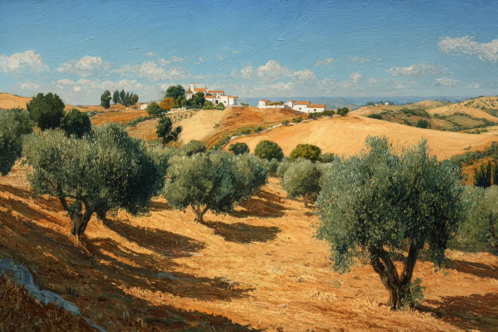
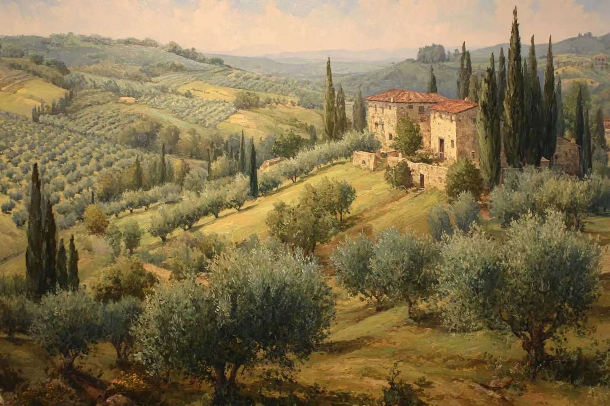
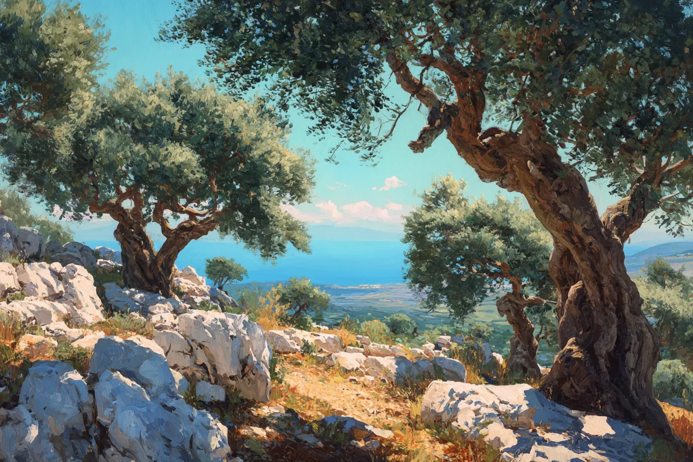
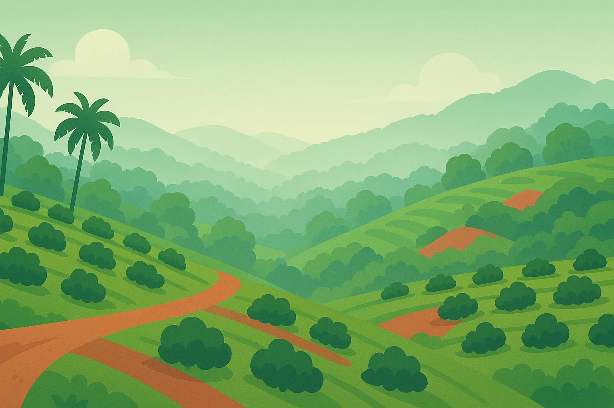

農地 I · スペイン
アンダルシア
世界のオリーブオイルの都——広大な平原、暑い夏、安定した収穫。多くの生産者がここに根を下ろす。
Picual · Arbequina

毎年秋、同じ問いが立ちはだかる——青い実で収穫し、鋭く骨格のあるオイルに仕上げるか、それとも熟した実を待ち、まろやかなオイルのためにオリーブミバエへの丸一シーズン分の労力を賭けるか。一年の他の全ては、この答えのための準備にすぎない。

世界のオリーブオイルの都——広大な平原、暑い夏、安定した収穫。多くの生産者がここに根を下ろす。

有名なテーブルオリーブの産地。穏やかな気候、夏の乾燥——ここでは水こそが規律。
格別な価格と、獲得すれば手に入る格式高いDOP農地専用の食卓。遅霜が最大の脅威。

乾いた大地に立つ樹齢数百年のオリーブ農園——ゲーム中最も過酷なキャンペーンにして、最高峰の品質上限。
冬の休眠期に剪定を行い、春の開花を守り、夏の乾燥期には灌漑を行い、収穫を台無しにする前にオリーブミバエを見張る。どの季節も、こなせる以上の作業がある。
石臼、遠心分離、あるいは油圧プレス——そしてOlio Nuovo、紙フィルター、または自然沈殿。この2つの判断が果実を個性に変え、正しい組み合わせが個性を格に変える。
品質と評判で解放される6つの販売チャネル——バルクトラックからグルメ食材店、高級シェフ、そして地域限定のエリート2軒まで。あなたのオイルの価値は、あなたの最悪の判断と同じだけしかない。
はい——ダウンロードは無料です。アンダルシアとカラマタは無料の農園です。トスカーナ、チュニジア、Estate Bundleは任意の買い切り課金です。広告はありません。
いいえ。プレイにログイン、サインアップ、アカウント登録は一切必要ありません。
はい——メインのゲームは完全にオフラインで動作し、インターネット接続は不要です。
毎年、農園の手入れに始まり、搾油所での収穫の搾油と濾過、そしてオイルをバイヤーに売り、その利益を農園へ再投資するまでの流れで進みます。
私たちが再現するのは現実ではなく、決断そのものです。明快さはリアリズムに勝る——そして、どの仕組みも意味のある決断として、自らの存在意義を証明しなければならない。
Olive Farm Simはシングルプレイヤーゲームです——アカウント不要、タイマーなし、広告なし、完全オフラインでプレイ可能。2つの農園は無料。トスカーナ、チュニジア、Estate Bundleは任意課金です。サポート、ご意見、その他のお問い合わせは、スタジオまでご連絡ください。